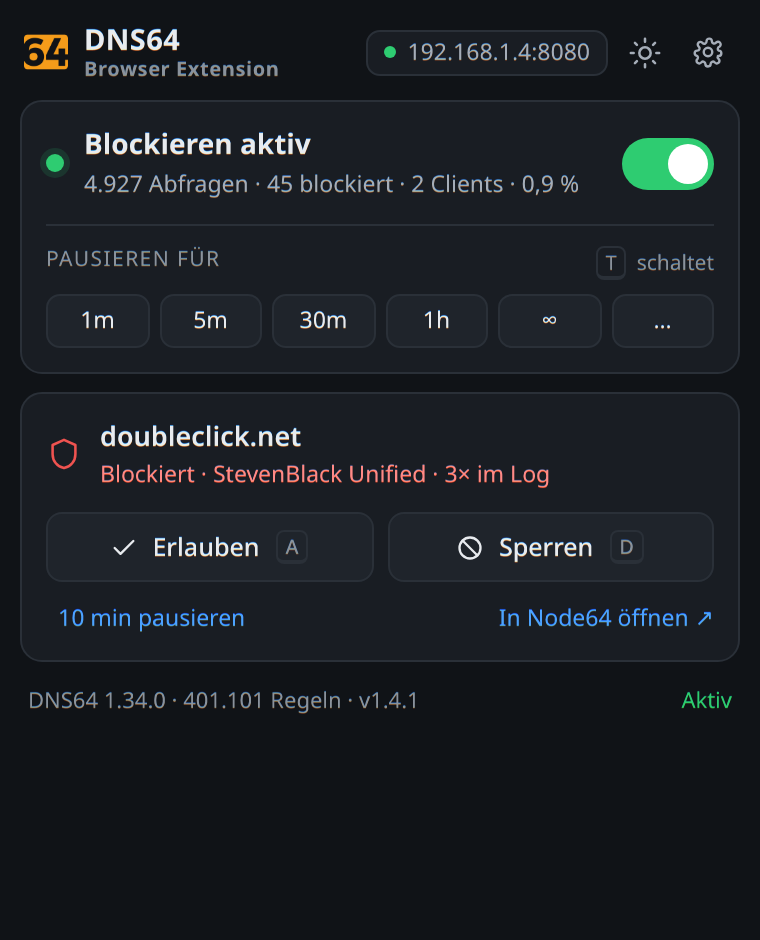
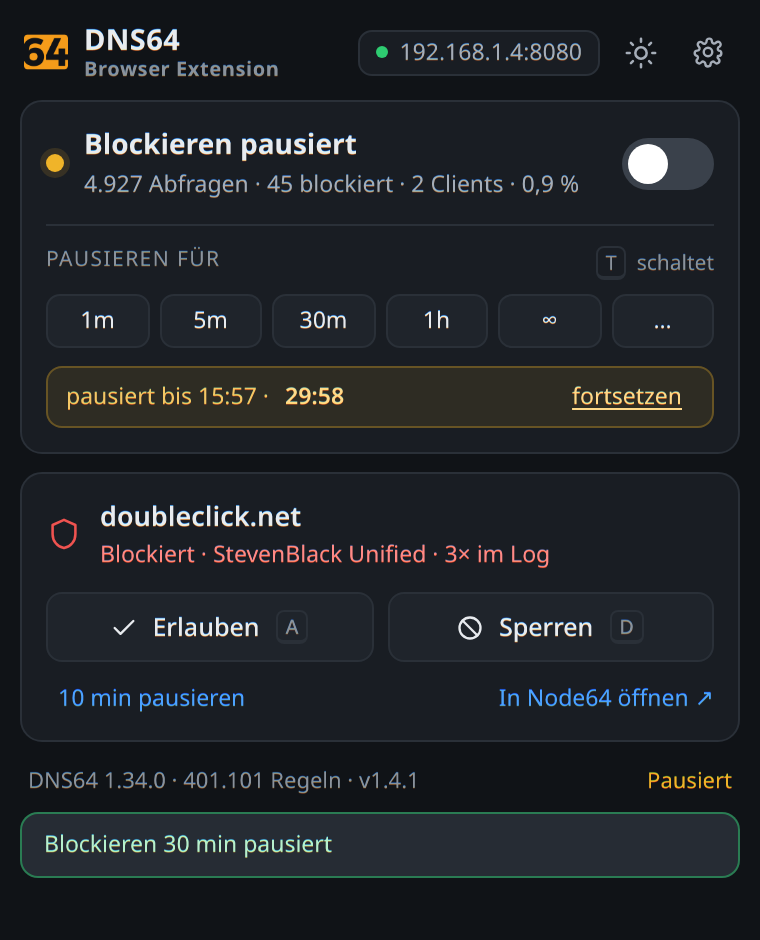
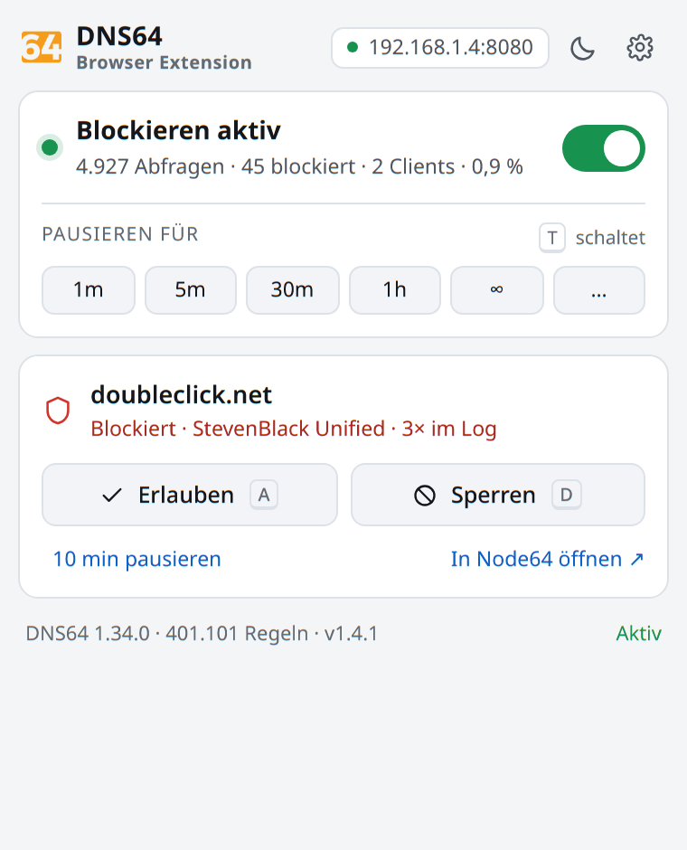
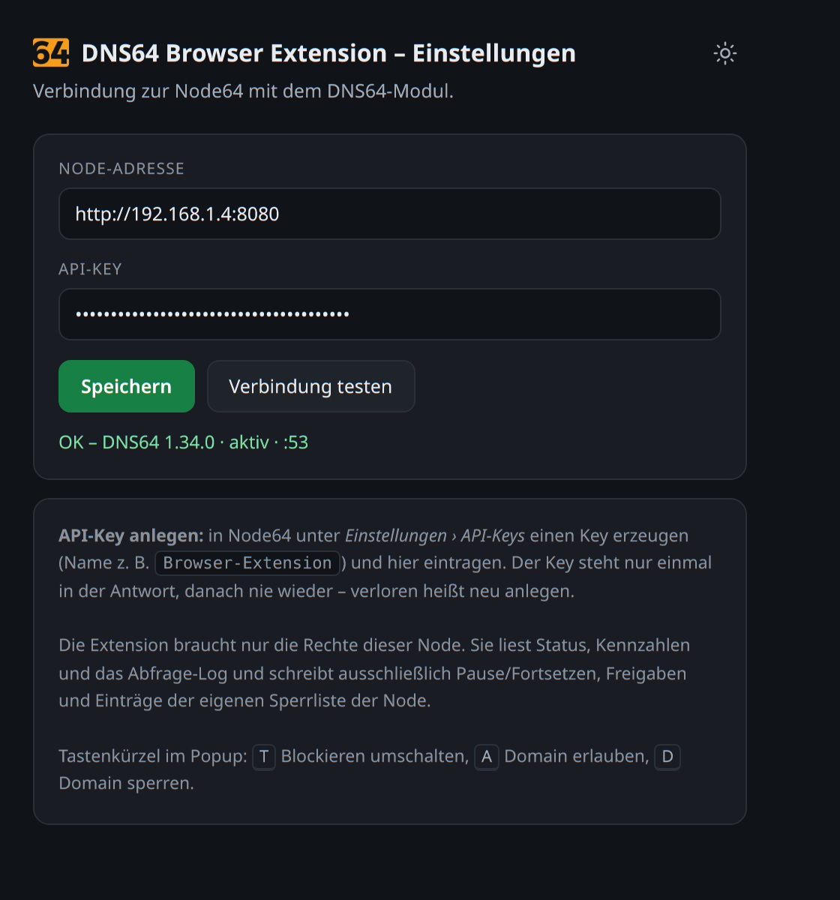

DNS64
DNS64Blocklisten von DNS64
im Browser schalten.
Die Erweiterung ist der Schalter für das DNS64-Modul einer selbst betriebenen Node64-Instanz: Blockieren pausieren, eine Domain freigeben oder sperren – mit Status und Kennzahlen, ohne die Weboberfläche der Node zu öffnen.
Kostenlos · kein Konto · keine Telemetrie · Version 1.4.4 · für Chrome, Brave, Edge und andere Chromium-Browser

Was sie kann
Alles direkt am Popup, alles über die vorhandene API der Node – keine eigene Blockierlogik.
Pausieren in einem Klick
1, 5, 30 oder 60 Minuten, unbegrenzt oder eine eigene Dauer bis 1440 Minuten – mit laufendem Countdown.
Aktuelle Seite im Blick
Zeigt, ob die Domain des aktiven Tabs blockiert ist und von welcher Liste – oder ob du sie selbst freigegeben hast.
Freigeben und sperren
Trägt die Domain samt Subdomains in die Freigabe- oder Sperrliste der Node ein. Derselbe Knopf hebt es wieder auf.
Kennzahlen
Abfragen, blockierte Abfragen, Clients und Quote der letzten 24 Stunden, dazu Blocklistengröße und Regelzahl.
Symbol als Zustandsanzeige
ON = Listen greifen, OFF = pausiert, ! = Node nicht erreichbar oder Schlüssel ungültig. Kein Zähler, der ins Unendliche läuft.
Hell und dunkel
Folgt automatisch System bzw. Browser; der Knopf im Kopf kehrt es bei Bedarf um. Tastenkürzel: T, A, D.
Einblicke
Aufnahmen aus der laufenden Erweiterung, verbunden mit einer echten Node64-Instanz.


Was du brauchst
Die Erweiterung ist ein Client – ohne eigene Node tut sie nichts.
- Node64 im eigenen Netz, standalone oder mit ipv64.net verknüpft – Quellcode und Anleitung: github.com/ipv64net/node64 (Apache-2.0)
- DNS64-Modul eingeschaltet, erreichbar unter
http://<node>:8080 - API-Key aus Einstellungen › API-Keys der Node; der Key bleibt lokal im Browser und geht nur an diese Node
- Chromium-Browser – Chrome, Brave, Edge, Vivaldi, Opera

Bewusste Grenzen
Damit klar ist, was die Erweiterung nicht tut.
- Pausen gelten für die ganze Node, nicht für ein einzelnes Gerät – so gibt es die API vor.
- Eine Minute ist die kürzeste Pause, die die API zulässt.
- Der Status stammt aus dem Abfrage-Log der Node; eine nie aufgelöste Domain gilt als unbekannt.
- Nur das DNS64-Modul – keine Healthchecks, kein DynDNS, kein PROXY64.
- Oberfläche auf Deutsch.
Datenschutz
Keine Telemetrie, keine Analyse, keine Fremdserver.
Die Erweiterung spricht ausschließlich die Node-Adresse an, die du selbst einträgst. Node-Adresse
und API-Key liegen lokal im Browser (chrome.storage.local), werden nicht synchronisiert
und an niemanden sonst gesendet. Der Hostname des aktiven Tabs wird nur angezeigt, nicht gespeichert.
Details: Datenschutzerklärung.